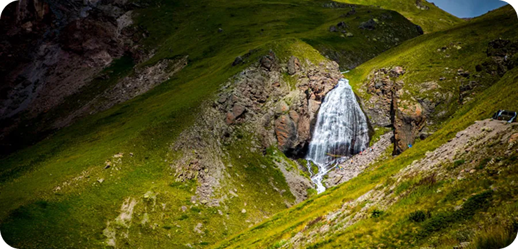
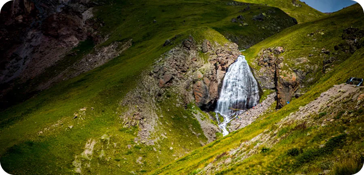

Водопад «Девичьи косы»
Место силы, где шум воды и свежесть горного воздуха дарят полное ощущение свободы и единения с природой.

Девичьи Косы — жемчужина Эльбруса
На склонах Эльбруса скрыта одна из самых впечатляющих природных красот Кавказа — водопад «Девичьи Косы». Его мощные потоки срываются с высоты около 60–70 метров, рассыпаясь на сотни тонких струек, напоминающих длинные волосы, развевающиеся на ветру. В солнечные дни в брызгах воды рождаются яркие радуги, а прохлада водопада дарит необыкновенную свежесть. Это место словно создано для тех, кто ищет красоту в её первозданном виде.
Что это такое?
Водопад питается талой водой ледника Терскол, что делает его особенно полноводным летом, когда солнце активно прогревает ледяные массы. Он расположен на высоте около 2 500 метров над уровнем моря и считается одной из главных достопримечательностей посёлка Терскол. Дорога к нему проходит по живописной тропе через густой хвойный лес и открытые альпийские луга. По пути путешественникам открываются великолепные виды на горные вершины, а сам маршрут не требует особой подготовки, что делает посещение доступным даже для начинающих туристов.
Что взять с собой?
- Лёгкую куртку или ветровку: даже в тёплый день у водопада может быть прохладно.
- Удобную треккинговую обувь для горных троп.
- Фотоаппарат или смартфон — виды впечатляют и захочется сохранить их надолго.
- Бутылку воды и лёгкий перекус: прогулка займёт несколько часов.
- При желании — треккинговые палки, они облегчат подъём по каменистой тропе.
Что вас ждёт?
- Неспешная прогулка среди хвойного леса и горных лугов.
- Встреча с одним из самых красивых водопадов Кавказа.
- Уникальная возможность сделать фотографии на фоне «кос», сияющих в солнечных лучах.
- Атмосфера тишины, свежего воздуха и единения с природой.
- Незабываемые впечатления от прикосновения к величию Эльбруса.
 
